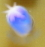

<dom-module id="device-switch">

  <template>
    <style>
      paper-card {
        background: #ccc;
        margin: 10px;
      }
      /deep/ .title-text {
        text-align: center;
      }
      .card-content {
        padding: 0;
        position: relative;
      }
      .device-image {
        width: 420px;
      }
      .led-image {
        position: absolute;
        left: 66px;
        top: 131px;
        transition: opacity .25s ease-in-out;
        -moz-transition: opacity .25s ease-in-out;
        -webkit-transition: opacity .25s ease-in-out;
      }
      .led-image-0 {
        opacity: 0.0;
      }
      .led-image-1 {
        opacity: 1.0;
      }
      .button-image {
        position: absolute;
        left: 74px;
        top: 96px;
      }
    </style>

    <paper-card heading="[[device.name]]">
      <div class="card-content">
        
        
        
      </div>
    </paper-card>
  </template>

  <script>
    Polymer({
      is: 'device-switch',
      properties: {
        redis: {type: Object},
        device: {type: Object}
      },
      _buttonDown(e) {
        this.set('device.button', '1');
        this.redis.rawCall(['HSET', `caretaker.devices.${this.device.id}`, 'button', '1']);
      },
      _buttonUp(e) {
        this.set('device.button', '0');
        this.redis.rawCall(['HSET', `caretaker.devices.${this.device.id}`, 'button', '0']);
      },
      _ledImageClass(relais) {
        return `led-image led-image-${relais}`;
      },
      _buttonImage(button) {
        return `images/switch1-button-${button}.jpg`;
      }
    });
  </script>

</dom-module>
